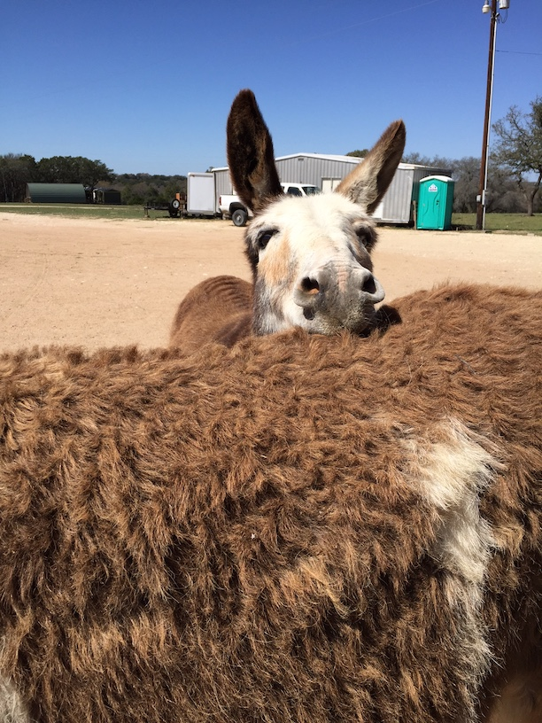
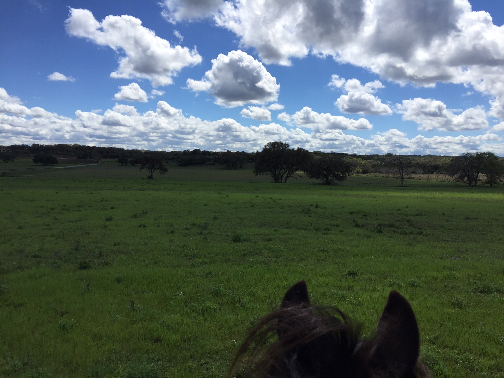
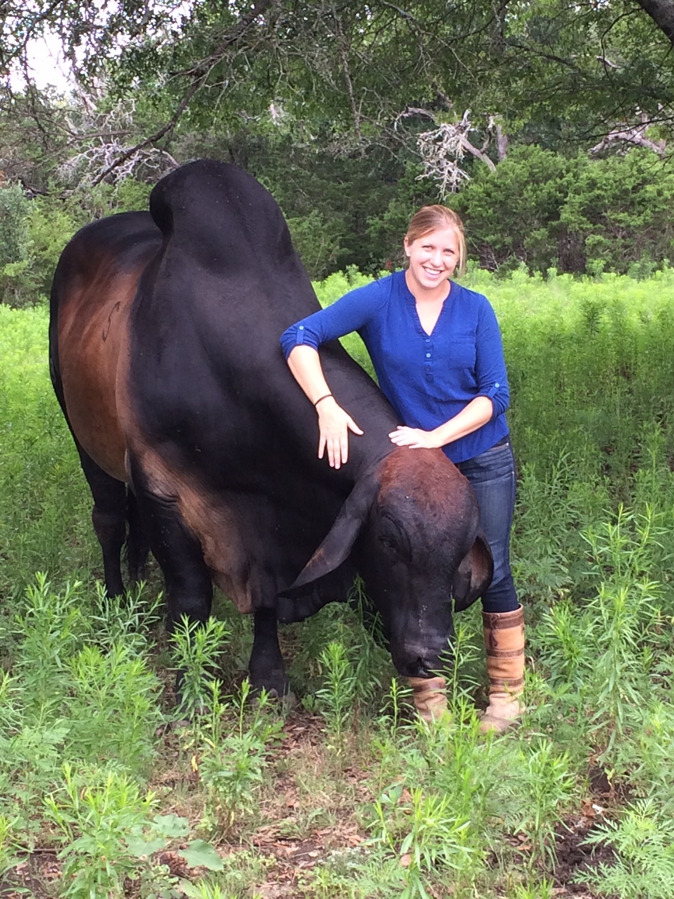
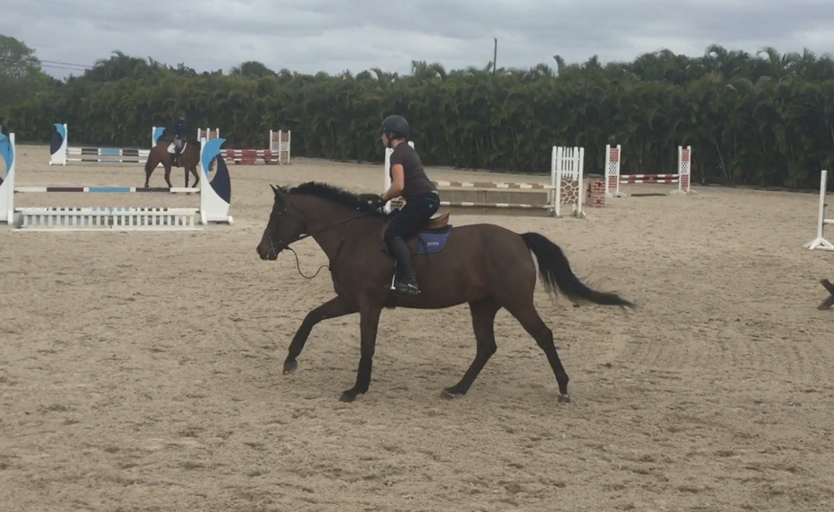
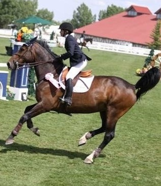
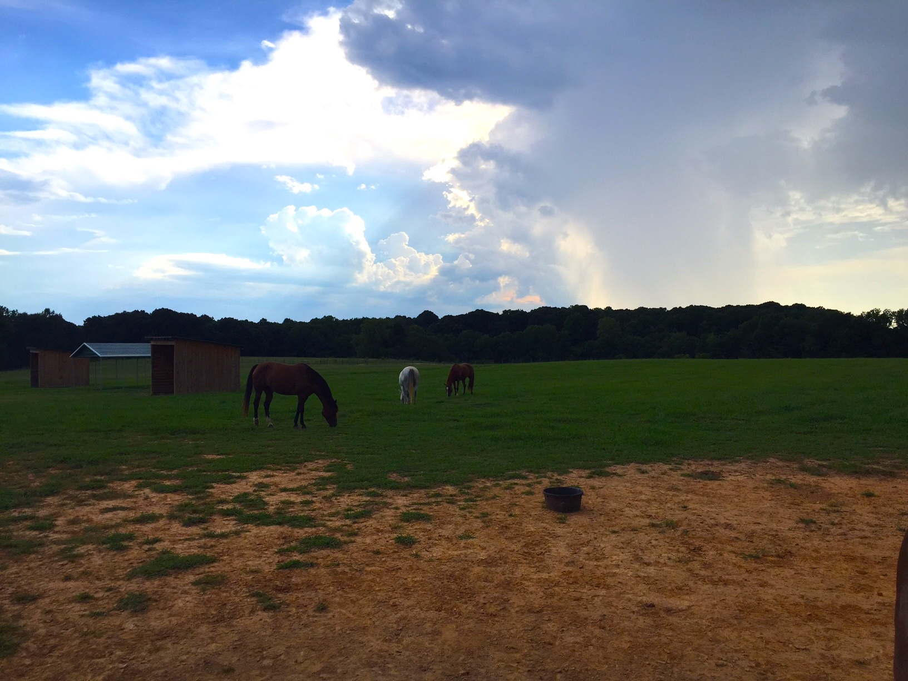
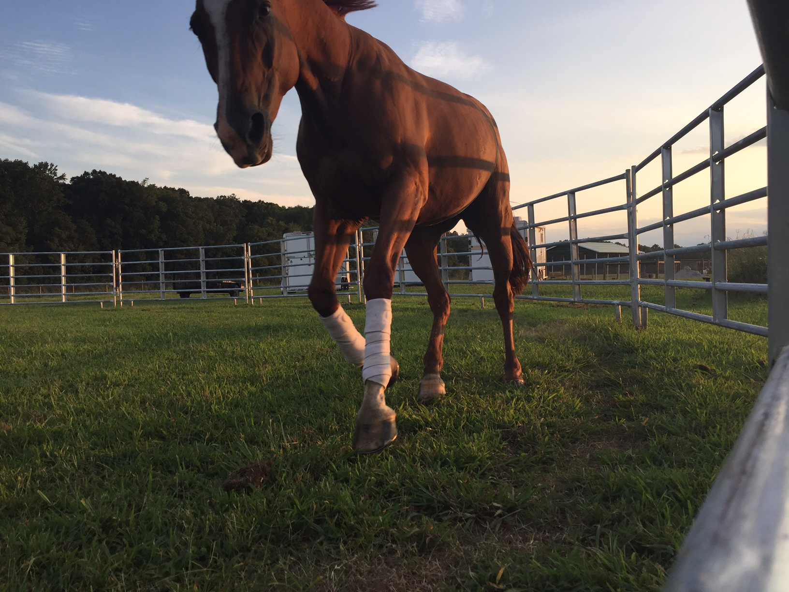
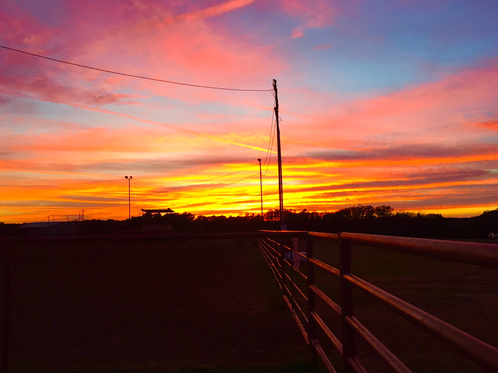

Me riding Taminika at the Thunderbird showpark in Canada

Two of my favorite donkeys, Stafford and Francis

The view from the back of a pony at Milestone Riding Academy

Hanging out with Allan, the giant Brahma bull who thinks he's a puppyCabby grazing at her new home shortly after moving to North Carolina

I got to ride a very fancy horse named Teddy while visiting my old barn in Wellington, FL

Me riding Taminika in the victory Gallop at Spruce Meadows in Calgary

Cabby grazing with her herdMe riding Cabby in a lesson

Cabby cantering while I worked with her in a roundpen

Sunset out at the ranch in TexasOne of my favorite pictures of Cabby at sunset